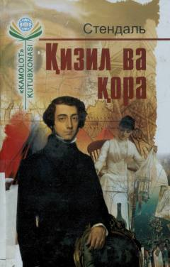

QVXIX asr Fransiya jamiyati va insoniy ehtiroslar haqidagi klassik roman.
Stendhalning ushbu mashhur romani XIX asr Fransiya jamiyatidagi ijtimoiy ziddiyatlar va insoniy ehtiroslarni tasvirlaydi. Asar bosh qahramoni Julien Sorelning o'z maqsadiga erishish yo'lidagi kurashi, muhabbat va ambitsiyalari orqali davrning murakkab qiyofasi ochib beriladi.